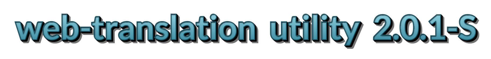
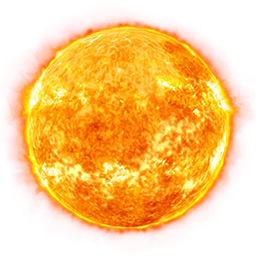
сяє сяє сяє
Орбітальні дані:
Апог.: -Периг.: -
Кут нахилу: -
Сер. швид.: -
Фізичні дані:
Тип: зіркаМаса: 1,988×10^30 кг
Екв. радіус: 695 700 км
Пол. радіус: 695 700 км
Сила тяжіння: 274,0 м/с2
Місії:
| Зореслав I & II | 0/2 | |
| Лукаві раби | 0/5 | |
| Ниці химери | 0/11 |
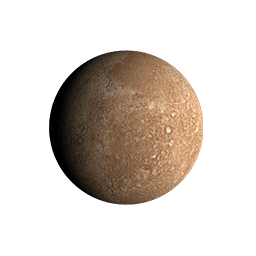
тато не старався
Орбітальні дані:
Апог.: 69 820 000 кмПериг.: 46 000 000 км
Кут нахилу: 7°
Сер. швид.: 47,36 км/с
Фізичні дані:
Тип: планетаМаса: 3,3011×10^23 кг
Екват. радіус: 2440,5 км
Поляр. радіус: 2438,3 км
Сила тяжіння: 3,7 м/с2
Місії:
| Змії кадуцея | 0/2 |
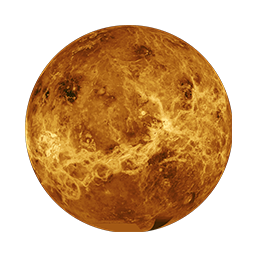
венеричні захворювання
Орбітальні дані:
Апог.: 108 941 000 кмПериг.: 107 480 000 км
Кут нахилу: 3,395°
Сер. швид.: 35,02 км/с
Фізичні дані:
Тип: планетаМаса: 3,3011×10^23 кг
Екват. радіус: 6051,8 км
Поляр. радіус: 6051,8 км
Сила тяжіння: 8,87 м/с2
Місії:
| Розбите люстерко | 0/1 | |
| Пентакль Аделаїди | 0/5 |
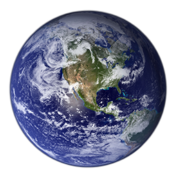
трава у дома
Орбітальні дані:
Апог.: 152 098 232 кмПериг.: 147 098 290 км
Кут нахилу: 0°
Сер. швид.: 29,785 км/с
Фізичні дані:
Тип: планетаМаса: 5,9722×10^24 кг
Екват. радіус: 6378,1 км
Поляр. радіус: 6356,8 км
Сила тяжіння: 9,81 м/с2
Місії:
| Оригінальні зонди | 0/10 | |
| Герцоги геєни | 0/13 | |
| Алавар | 0/25 | |
| Потойбічна сімка | 7/7 | |
| 15-річчя незалеж. | 0/15 |
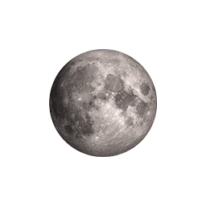
Орбітальні дані:
Апог.: 405 696 кмПериг.: 363 104 км
Кут нахилу: 5,145°
Сер. швид.: 1,022 км/с
Фізичні дані:
Тип: супутникМаса: 7,346×10^22 кг
Екват. радіус: 1738,1 км
Поляр. радіус: 1736,0 км
Сила тяжіння: 1,62 м/с2
Місії:
| Смуток Шевченка | 0/5 | |
| Години дня | 0/24 | |
| Падаль | 0/40 | |
| Монреальський клуб | 0/44 |
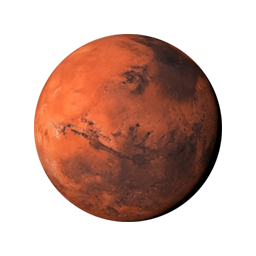
Орбітальні дані:
Апог.: 249 209 300 кмПериг.: 206 669 000 км
Кут нахилу: 1,85°
Сер. швид.: 24,077 км/с
Фізичні дані:
Тип: планетаМаса: 3,3011×10^23 кг
Екват. радіус: 3396,2 км
Поляр. радіус: 3376,2 км
Сила тяжіння: 3,711 м/с2
Місії:
| Маренго | 0/15 | |
| Соломон | 0/20 |
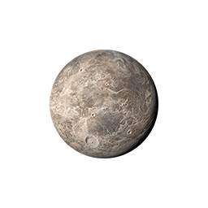
Орбітальні дані:
Апог.: 446 669 320 кмПериг.: 380 995 855 км
Кут нахилу: 10,585°
Сер. швид.: 17,882 км/с
Фізичні дані:
Тип: карликова планетаМаса: 3,3011×10^23 кг
Екват. радіус: 482,5 км
Поляр. радіус: 445,5 км
Сила тяжіння: 0,27 м/с2
Місії:
| Мефістофель | 0/1 | |
| Фауст | 1/1 |
Архітектор Артипів
Утиліти
Перекладач
Співрозмовник
Фото від супутника
Супутникове радіо
Інформація
Про нас
Хронологія
Галерея
Мапа супутників
Інше
Вміст від членів ВАІ
Помилка
Щось пішло не так
Введіть ключ доступу
Оберіть улюблену книгу нашого ректора
Введіть назву астероїду, який запустили ВАІ
Заради наукового прогресу, винахідники з ВАІ вирішили дослідити, що відбудеться, якщо астероїд не падатиме на Землю як вони це роблять зазвичай, а навпаки - вилетить з неї. 27 березня 2006 року стався пуск ракети-носія, що запустила шматок корінної породи, видобутої з Кадиковського кар'єру автономної республіки Крим.
Вітаємо на вебсайті наукового корпусу
Вінницького Аерокосмічного
Інституту!
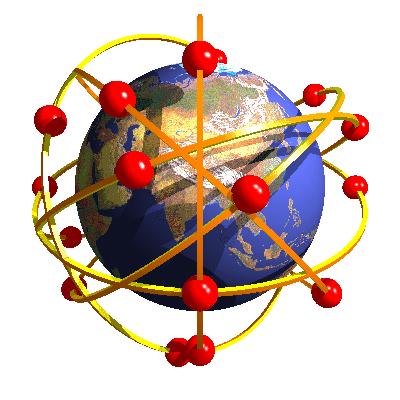
Ми - угрупування науковців Вінницького Аерокосмічного Інституту, що під керівництвом ректора Архітектора Артипова та спільно з нашими партнерами розвиваємо галузь космічної інженерії в Україні!
У зв'язку з отриманням фінансування, наказую відродити науковий корпус ВАІ та створити спілку однодумців, що присягаються сумлінно працювати в поті чола заради підкорення космосу й пошуку знань про можливе й неможливе, а сьогоднішню зустріч вважати першим засіданням новоутвореної спілки науковців! Трикратне ура!
- Наказ А. Артипова №1 04-08-1994
Відео презентація
Наші нагороди
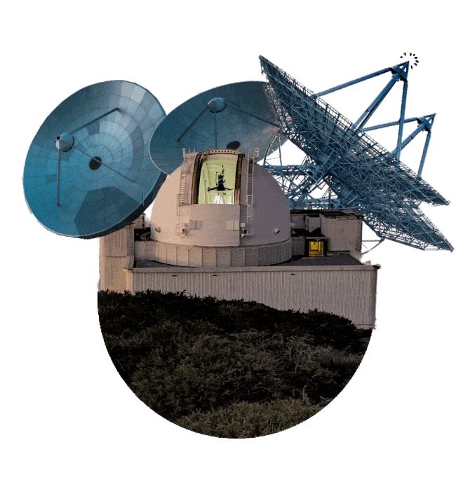
Супутникове радіо
Про нас!
Ми - угрупування науковців Вінницького аерокосмічного інституту, що під керівництвом ректора Архітектора Артипова та спільно з Національним космічним агентством України запустили мережу супутників на високу навколоземну орбіту для спостереження за глибоким космосом та синтезом інформаційних кластерів.
Кожен супутник має на борті устаткування з Квантово-рудиметарною опто-карданваловою утилітарною системою (скорочено КРОКУС) - відчизняним нейронним алгоритмом керування, що здатен управляти супутниками локально - без втручання штабу. Ця концептуальна технологія була розроблена особисто паном Артиповом, і наразі їй немає жодного аналогу в усьому світі!
Скрутний початок
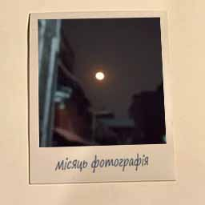
Колись давно наша люба альма-матер була на задвірках аерокосмічних технологій старого світу - після розпаду СРСР з нашого корпусу було вивезено більшість наукової літератури та все технічне обладнання. У найскрутніші часи студенти нашого закладу приходили на заняття просто побалакати одне з одним, подивитися на одну-єдину фотокартку місяця, яку екс-кадебісти прогледіли під час обшуків, або порозглядати старовинні шумерські рукописи, які ми успадкували від історичного музею історії та науки, який знаходився у цій будівлі декілька десятиліть тому.
А оскільки переважна більшість педагогів на виборах проголосували за Леопольда Табурянського, нова влада безцеремонно припинила будь-яке фінансування. Майбутнє видавалося дуже похмурим...
Прорив!
19 вересня 1992 року в нашому університеті прорвало каналізаційну трубу. Нечистоти з неї затопили весь перший поверх та один з підвалів, у якому в нас знаходився архів. Але ця катастрофа забрала в нас не лише будь-які згадки про колишні досягнення - у верниводі гавна також потонув наш любий друг, колега та товариш охоронець Сигизмунд Подолько.
Справжній прорив!
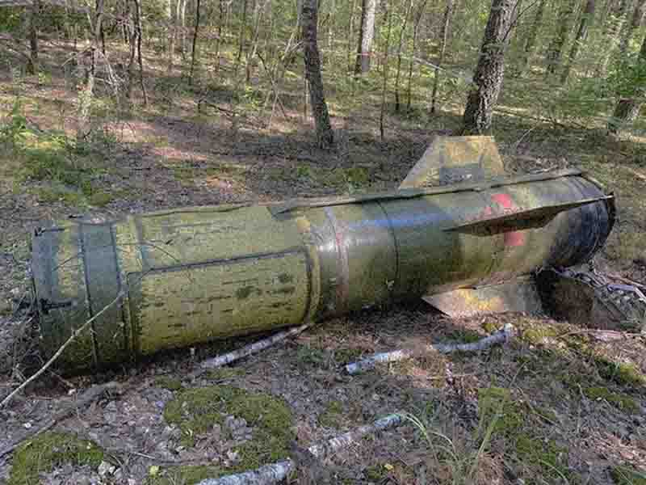
Коли здавалося, що університет доведеться зачиняти, наш вірний друг та колега Олександр "Штангенциркуль" Бетмарчук під час походу в ліс знайшов те, що дало нам шанс нарешті продратися крізь терня і до зірок - нерозірвану ядерну бомбу часів Холодної війни! Не гаючи часу, він сповістив нас про свою знахіду.
Ми всі одностайно погодилися, що найкращим рішенням буде розпилити її та подивитися, чи не знайдеться у ній чогось цінного. І щось цінне дійсно знайшлося! Цей подарунок з небес надав нам декілька центнерів рідкоземельних та радіоактивних металів. Швидко збувши їх на чорному ринку, ми отримали таке необхідне фінансування.
Мов фенікс з попелу
Маючи на руках баснословні гроші, наш ректор Архітектор Артипів в надзвичайно короткі строки підняв наш університет з колін. Ще вчора ми зафарбувавали мультяшні ракети олівцями в розмальовках - а сьогодні вже робимо креслення спражніх супутників фломастерами у складі новоутвореного гуртку прикладної аеронавтики!
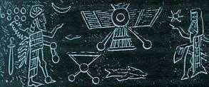
за яким було створено
один із супутників
Чималий поштовх у потрібному руслі нам дали прадавні шумерські нариси: попри те, що вони існували у допотопні часи, ці люди мали несподівано просунуті знання в аеродинаміці та настільки глибоке розуміння космонавтики, що багатьом сучасним націям і не снилося!
Контакт із зовнішнім світом
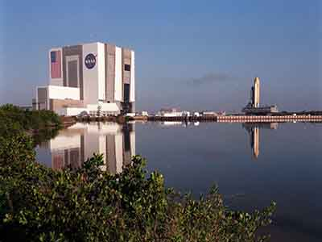
Перший прототип ми накреслили акурат до щорічного з'їзду космологів у Лос-Анджелесі, з яким на нього поїхав Архітектор Артипів. Завдяки своїй незрівнянній харизмі та дару вселяння ми вийшли на контакт з представниками NASA. Вони погодились запустити наш агрегат безкоштовно за 15 мільйонів доларів. Нам залишилося лише побудувати його та дочекатися вікна для запуску.
ПУСК

поруч із нашим супутником!
Змайструвавши першу версію нашого вітчизняного супутника за рекордний час, на наш гурток звернули увагу посадовці з Національнього космічного агентства України. Дізнавшись про наші незрівнянні досягення та великі амбіції, вони погодились взяти на себе частину витрат, щоправда тільки якщо ми заплатимо за їхню консультацію.
2 роки та 25 мільйонів доларів по тому, наша мрія нарешті здійснилася: 19 листопада 1997 року на борту шатлу Колумбія наш перший супутник приборкав небеса!
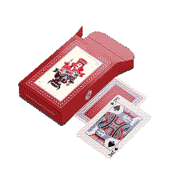
Подальший розвиток
Надихнувшись успішним запуском та успішним контактом із не менш успішним супутником, ми взялися до роботи. Впродовж наступних декількох років ми зібрали, довершили та запустили не один десяток, а може й сотню супутників. Звісно, не всі вони протрималися на орбіті - одна половина втратила альтитуду та впала назад на Землю, а інша половина вийшла з ладу в космосі. Але ті супутники, що затесалися серед статистичної похибки, і досі старанно працюють на благо українського та інтернаціонального люду!
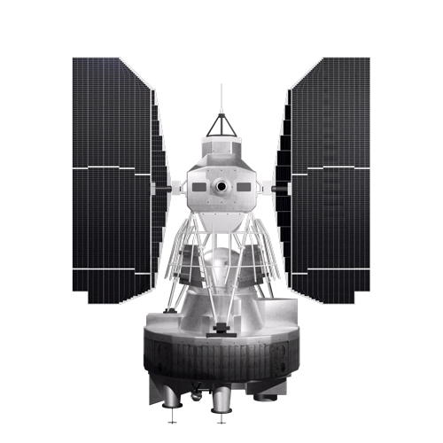
Мапа супутників
ПЕРЕКЛАДАЦЬКИЙ МОДУЛЬ ЗАКРИТО
НА НЕВИЗНАЧЕНИЙ ЧАС.
а я вам казав що він після їхньої смерті з глузду з'їхав капітально
хто так супутники запускає? він же лише орбіту засирає ними
я чув що вони всі відхиляються від курсу, виходять з ладу й летять бозна-куди
ви бачили того дідка, що за ним постійно вештається, мов тінь якась?
він же навіть на людину не схожий! у нього за очима порожньо
ну в цьому вони схожі. два чоботи пара
звучить абсурдно, але артипів в цьому плані більше людина, ніж цей хер
сподіваюся весь цей балаган не кінчить так само, як та пендоська секта, де вони всі повбивалися
артипів раніше тебе на паливо пустить, ніж дасть вбитися
а ви чули, що цей старпер колись був одружений?
хіба що на супутнику
було б добре якби цей порваний гандон полетів на ньому в космос і більше не повертався
навіть той поц що бомбу знайшов був би кращим лідером, ніж їбаний артипів
штангенциркуль?
так, цей болван. сірої речовини в черепі як кіт наплакав, але навіть він розуміє, що устаткування треба робити на совість
але ні, треба засрати всю сонячну систему своїми залізяками і сидіти в своїй вежі ні бе ні ме ні кукаре
щось ти розійшовся, кефіре
бо блядь, цей хуйлопан наробив хуйні і сидить довольний. о, ще цю залупу відкрив, як її там
"перекладач". в сраку їбач блядь. люди тупі, радіють, але знай вони наскільки ця параша ненадійна - плюватись почали б
воно думає що кванти з космосу ловити це все одно що перекладати. старе тупе неосвічене чмо
я чув що до ваі він був якимось ученим зі ступенем
учьониє - в гавнє мачьониє! в совку кожен дятел був професором, це нічого унікального
хіба його не особисто сталін призначив?
ага, і на наступний день здох. я теж цю історію чув. що один - вусате хуйло, що інший
Супутник-співрозмовник
Після місяців прискіпливого планування та кропіткої праці, ми раді нарешті представити громаді модуль розумної генерації тексту! Цей інноваційний алгоритм, аналогів якому немає в усьому світі, здатен свідомо осягати отриманий текст і за допомогою соляризації оптового карданвалу в умовах відкритого космосу та ансамблевого анонімного голосування генерувати розумні, аргументовані та послідовані відповіді.
На відміну від решти наших розробок, цей модуль залишатиметься пропрієтарним щонайменше до кінця
цього десятиліття.
- Наказ А. Артипова №821 20-06-2004
Правила спілкування з супутниками
Про що можна питати:
|
Про що НЕ МОЖНА питати ніколи
і нізащо:
|
Фотографія з супутника
У вас є унікальна можливість отримати фото від наших супутників! Оберіть супутник, від якого ви хочете отримати фото, він зробить фото в реальному часі!!! і надішле його вам. Ви можете встановити отриману фотографію в якості шпалер вашого комп'ютера, а можете і роздрукувати та повісити у себе в спальні - робіть, що вам тільки заманеться!
Як відбувається обробка фотографій
Якщо вам цікаво, які передові алгоритми використовуються нами для обробки фотографіи, то ми залюбки вам розкажемо! Ми ніколи й нічого не скривали від публіки!
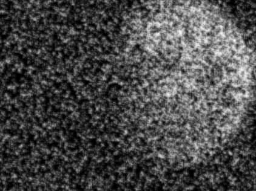 |
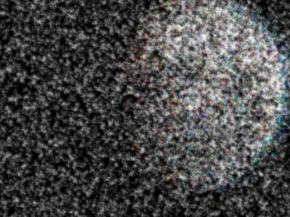 |
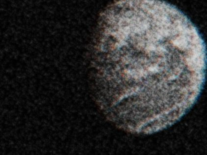 |
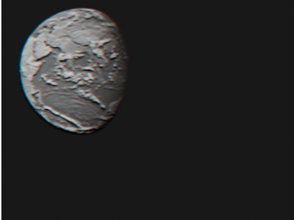 |
| Крок №1 | Крок №2 | Крок №3 | Крок №4 |
| Сире фото, отримане від супутника |
Нормалізація соляризаційних рівнів | Нашаштування градієнтного спуску | "Реконструювання" потрібного фото |
Щойно ви побачили те, як купу років тому найкращі уми ВАІ розшифровували першу (!!!) фотографію нашої рідної планети, зроблену супутником з оригінальної десятки. Але якщо вам цього мало, ви маєте унікальну змогу взяти на себе роль передового науковця ВАІ і проявити фото власноруч!
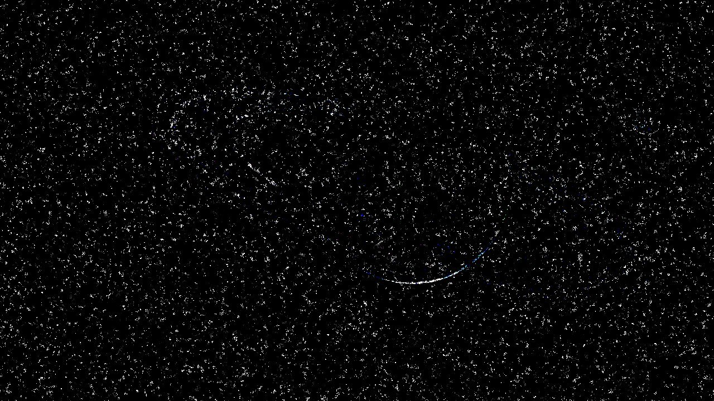 |
| Земля та її супутник Місяць очима супутника ВАІ. |
| Необроблена, "сира" фотографія. Це дійсність. |
Історія ВАІ
Доба музею
| 1902 р. | У майбутній будівлі ВАІ відкрито історичний музей історії та науки, що приділяв особливу увагу шумерським рукописам. |
| червень 1926 р. | У вежі добудовано два поверхи. |
| 22 червня 1941 р. | Початок Великої Вітчизняної війни. |
| 26 серпня 1941 р. | В будівлю музею прилетіла німецька бомба. Архіви не постраждали, але були жертви серед працівників музею. Тих хто вижив добили радянські загороджувальні загони за дезертирство. |
Започаткування інституту
| 30 січня 1949 р. | В рамках відбудови УРСР у пустуючій будівлі було засновано Вінницький Аерокосмічний Інститут. |
| 4 березня 1953 р. | За особистим наказом генерального секретаря ЦК КПРС Іосіфа Сталіна новим ректором ВАІ призначено Архітектора Артипова. |
| 5 березня 1953 р. | Генеральний секретар ЦК КПРС Іосіф Сталін помер. |
| 6 березня 1953 р. | Архітектор Артипів запросив Валерія Туманяна та Беатрису Артипівну в якості декана та завідувальниці кафедри відповідно. |
| 11 жовтня 1953 р. | Новий генсек ЦК КПРС Нікіта Хрущьов наказав усім аерокосмічним інститутам СРСР взяти курс на створення інтерконтинентальних та міжпланетарних засобів пересування й перенесення. |
| 16 квітня 1957 р. | Створено першу в світі міжконтинентальну балістичну ракету. Проігноровано керівниками держави. Пізніше того ж року завод у Куйбишеві вкрав нашу розробку і отримав міжнародне визнання. |
| 22 червня 1957 р. | Створено перший в світі космічний супутник. Проігноровано керівниками держави. Пізніше того ж року розробка була вкрадена Сергієм Корольовим. |
| 25 січня 1958 р. | Створено першу в світі ракету Ілірад-І, здатну виходити на високу навколоземну орбіту. Проігноровано керівниками держави. Пізніше того ж року РКК Енергія у Калінінгргаді під очоленням гніди Корольова вкрали дизайн нашої ракети. |
| Примітка літописця: з небагатьох віцлілих журналів відомо, що наступну декаду науковий корпус ВАІ провів так само безуспішно. | |
Занепад ВАІ
| 19 листопада 1969 р. | Перший американець висадився на Місяць. З Москви до Архітектора Артипова прийшла телеграма, вміст якої залишається невідомим. |
| 20 листопада 1969 р. | Архітектор Артипів виїжджає у термінове відрядження. Ввечері о 21:29 у тамбурі наукового корпусу ВАІ знайдено тіла вбитих та понівечених Валерія та Беатриси. |
| 22 листопада 1969 р. | Під час автопсії в тілі Беатриси Артипівни Іларіонівни було знайдено записку: "Космосу тобі не бачити як своїх двох вух." |
| 13 грудня 1969 р. | Архітектор Артипів остаточно зачиняється у найверхній кімнаті вежи ВАІ. |
| 7 лютого 1970 р. | До ВАІ поступає телеграма про корекцію щорічного бюджету: відтепер інститут має існувати на 125 руб. 50 коп. на рік. |
| Примітка літописця: старожили ВАІ відомляються розповідати, що було далі. Продовжу писати з власних спогадів. | |
Часи незалежності
| 1 липня 1991 р. | До ВАІ приходять кадебісти з обшуками. Все обладнання та майже всі документи, пов'язані з космічними науками, вивезені до Москви. |
| 24 серпня 1991 р. | Верховна рада проголосила незалежність України. |
| 1 грудня 1991 р. | Відбуваються перші вибори Президента України. |
| 23 грудня 1991 р. | Архітектор Артипів використовує останні гроші, щоби направити факс до Києва з проханням переглянути бюджет інституту. |
| 24 грудня 1991 р. | З Києва приходить відмова, оскільки більшість працівників та студентів ВАІ на виборах проголосували за Табурянського Леопольда Івановича, а не Кравчука. |
| 1 серпня 1992 р. | З уст Артипова вперше звучить думка про закриття наукового корпусу ВАІ. |
Відродження ВАІ
| 1 вересня 1993 р. | До інституту вступають учні нині славнозвісної групи АК-93-1. |
| 2 липня 1994 р. | Олександр "Штангенциркуль" Бетмарчук знаходить списану (ядерну?) бомбу під час походу в ліс з одногрупниками. Ними було прйнято рішення (узгоджене з Архітектором Артиповим звісно) розпилити її на частини і продати за гроші. |
| 30 липня 1994 р. | Більшість компонентів бомби успішно продано. Отримані 15 мільярдів доларів було пожертвувано ВАІ. |
| 4 серпня 1994 р. | Перша зустріч новоствореної спілки науковців. |
| 5 листопада 1994 р. | Орієнтуючись на досвід пращурів, членами спілки накреслено першу схему новітнього супутника! |
| 7 листопада 1994 р. | Артипів вирішив не відкладати справу у довгий ящик і почав вести перемовини з NASA. |
| 4 січня 1995 р. | Початок розробки операційної системи для майбутніх супутників. |
| 13 квітня 1995 р. | Інтеграція асинхронної анодної катушки в будову супутника. Ідея елементарна та в ретроспективі очевидна, але чомусь до нас цього ніхто не робив. |
| 18 травня 1995 р. | ПОБУДОВАНО ПЕРШИЙ ПРОТОТИП СУПУТНИКА В КАБІНЕТІ №13 ВАІ!!! |
| 21 травня 1995 р. | Почувши про наші семимильні кроки в напрямку підкорення небесної тверді, нами зацікавилися в НКАУ. |
| 20 червня 1995 р. | Проект з NASA узгоджено! Наступне вікно для запуску буде восені 1997 року, тому чекаємо. |
| 29 грудня 1996 р. | Було прийнято рішення розбити один великий супутник на десять малих машин - задля ефективності та надійності. |
| 17 листопада 1997 р. | Архітектор Артипів прошив мікросхеми супутників квантово-рудиметарною опто-карданваловою й утилітарною системою на заміну попередній ОС. |
| Примітка літописця: я думав про це знали всі, але коли я згодом опитав решту гуртка - ніхто не чув про це. Дивно. | |
| 19 листопада 1997 р. | ПУСК! |
| 21 листопада 1997 р. | Наші супутники виведено на орбіту! |
| 29 листопада 1997 р. | Наш штаб отримав перший децибіт інформації від супутників! |
| 12 грудня 1997 р. | Модуль перекладу працює успішно. Соляризація дає небачені результати! |
| 24 грудня 1997 р. | Доступ до перекладацього модуля відкрито назагал. |
| Примітка літописця: Єрмоленко, я вже втомився це писати, напиши про 20 етапів розверствування мережи супутників по всій сонячній системі. Бажано до кінця серпня - Артипів хоче встигнути оновити сайт до нового семестру. | |
???
| 20 червня 2004 р. | Замість їхнього хваленого "перекладацького модуля", який вийшов з ладу декілька тижнів тому, старпер Артипів наказав своїм рабам відкрити назагал модуль розумної генерації тексту. |
| 30 жовтня 2006 р. | Простір Сонячної системи загажено останнім супутником цієї шарашкіної контори. Шарлатан Артипів планував запустити ще свого сміття у космос, але остання ракета так і не була запущена. |
| 29 лютого 2007 р. | Архітектор Артипів зник. |
| 1 березня 2007 р. | Більшість супутників вийшли з ладу. Контакт залишився лише з тими супутниками, що розроблялися спільно з іноземними партнерами (читайте "лише Потойбічна Сімка", бо ці волоцюги тримали своїх технології за сімома замками). |
Галерея
Знай своїх героїв в обличчя!
|
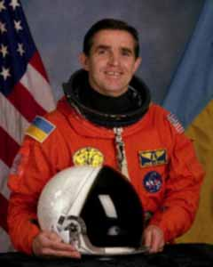 |
|
| Групове фото нашої наукової спілки | Леонід Каденюк - космонавт що розверстував супутники |
|
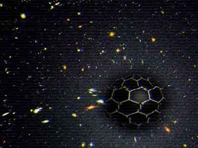 |
|
|
Ілюстрація супутника №2 (артефакти викликані квантовими перешкодами та соляризаційним зсувом) |
Науковий корпус Вінницького аерокосмічного інституту |
|
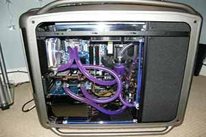 |
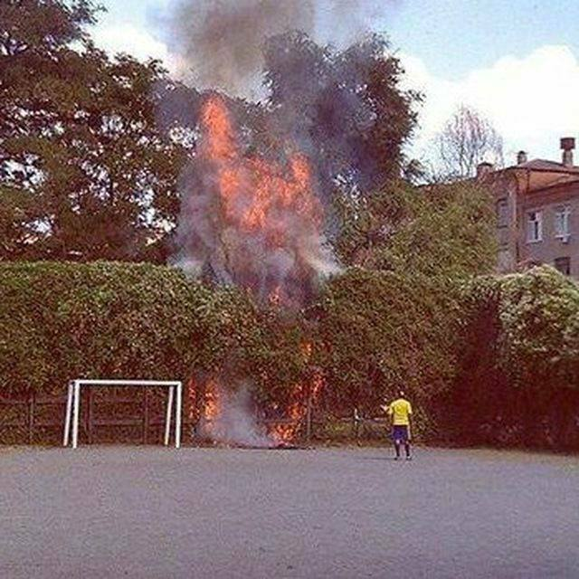 |
| Новітній комп'ютерний агрегат, який ми нещодавно купили до нашої лабораторії | Пожежа під час одного з перших випробувань супутників |
Шумерські рукописи
|
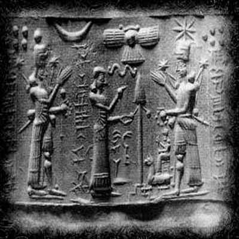 |
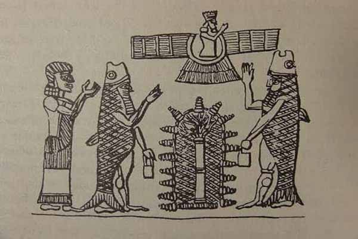 |
|
Шумерська знать проводжає супутник у дальню путь і робить останні налаштування |
Версія свята в уявленні одного з працівників колишнього історичного музею |
|
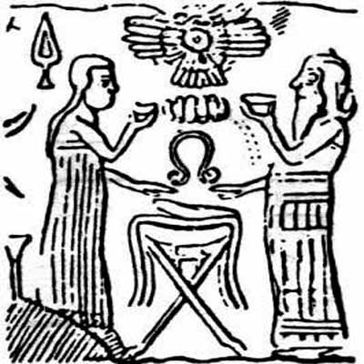 |
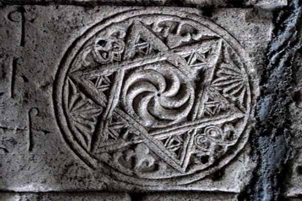 |
|
Шумери п'ють напій знань під покровительством свого супутника |
Вертигова зоря - символ триєдиного царства землі та неба (шумери + юдеї + вірмени) |
|
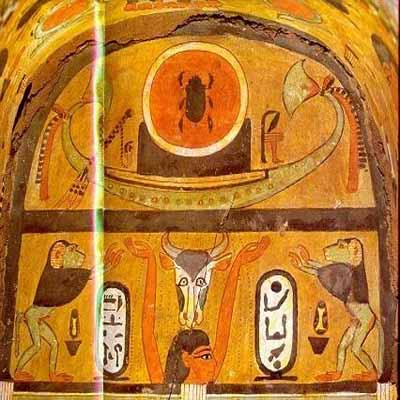 |
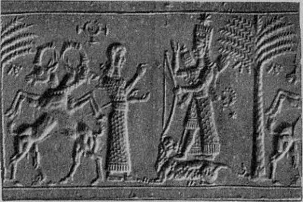 |
|
Шумери (корова) дають ідею (думку), Вірмени (мавпи) дають симетрію, Юдеї (жук) дають речовини |
Шумерський імператор Ир Другий наказує розробити супутник для підкорення небесної тверді |
|
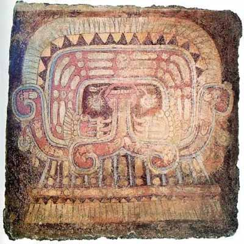 |
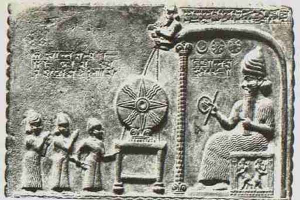 |
|
Потік тахіонів в Трахулядній матриці (мовою шумерів - Ичевах мадиз) |
Шумерська челядь презентує новітню розробку імператору Иру Другому |
|
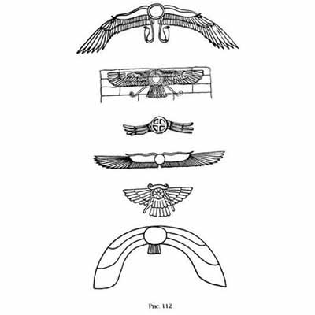 |
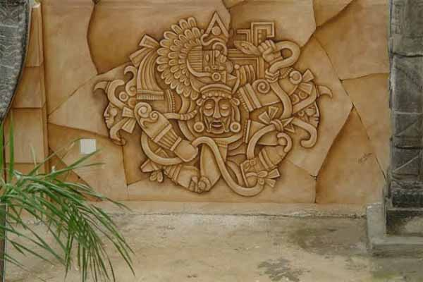 |
|
Крила - невід'ємна частина будь-якого шумерського супутника |
На кожному супутнику було викарбувано обличчя одного з шумерських божеств. На фото - Ілірад |
|
Тест ЯКИЙ ТИ ЛЮБОВНИК? Пройди швидкий тест і дізнайся всю правду про своє особисте
життя! |
|
| Посилання >>> |
|
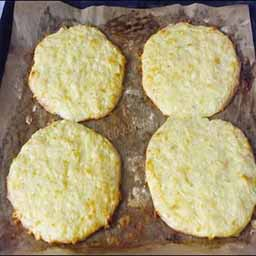 |
РЕЦЕПТ ДНЯ Дізнайся, чим харчуються студенти ВАІ! Приготуй ЦЮ СТРАВУ |
| Посилання >>> |
|
Отримай УНІКАЛЬНІ ШПАЛЕРИ прямо ЗАРАЗ! Шпалери для комп'ютерів, телефонів нокія соні еріксон і т.д. у високій якості. |
|
| Посилання >>> |
|
Цукор не стоїть на місці! Мапа заводів України з переробки цукрового буряка в цукор. |
|
| Посилання >>> |
|
Топ-10 фактів про Альберта Енштейна! Розгадай секрет його геніальності. |
|
| Посилання >>> |
|
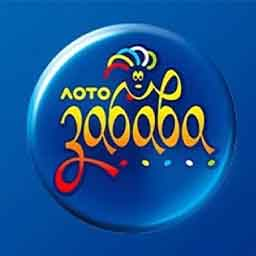 |
ЗЛАМ ЛОТО ЗАБАВА ХАК, ВИКАЧАТИ ГРОШІ З КАЗИНО ЩЕ НЕ БУЛО ТАК ПРОСТО |
| Посилання >>> |
|
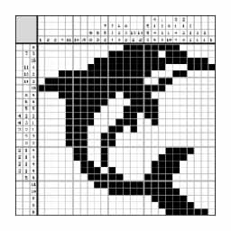 |
Неймовірно складна головоломка лише для вибранців! Пройди цей унікальний пазл і отримай нагороду, яка тобі й не снилася! |
| Посилання >>> |
Тест на любовника
Пройди швидкий тест та дізнайся, який з тебе коханець!
Наведи курсор на датчик і натисни ліву кнопку миші. Датчик зчитає біометричні дані твого тіла та частоту твого торсіонного поля через твій вказівний палець і розповість тобі всю правду про те, як тебе бачать жінки!
Рецепт дня
Круті шпалери в HD
|
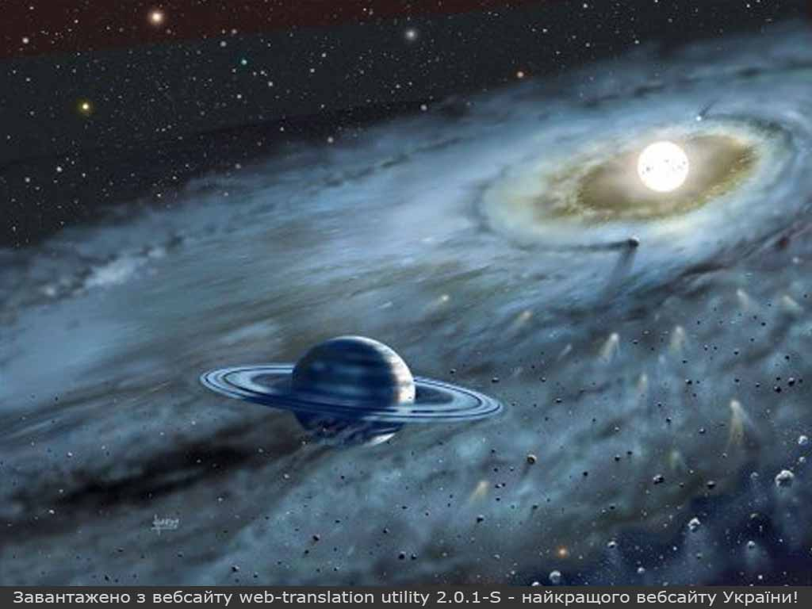 |
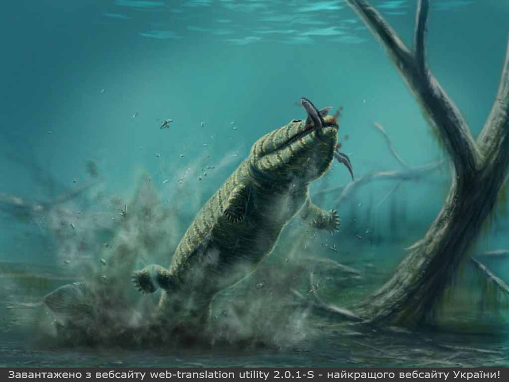 |
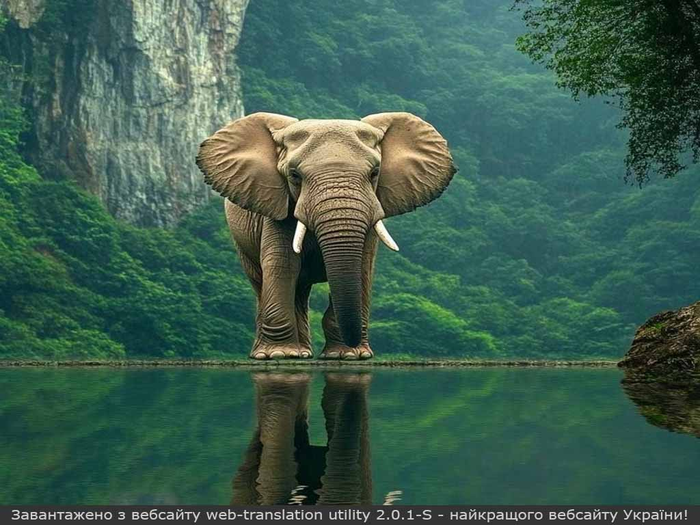 |
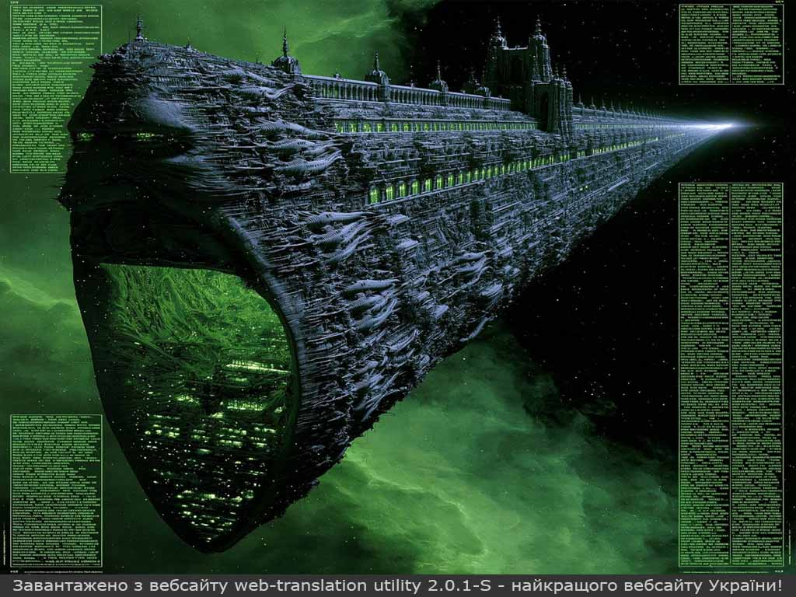 |
|
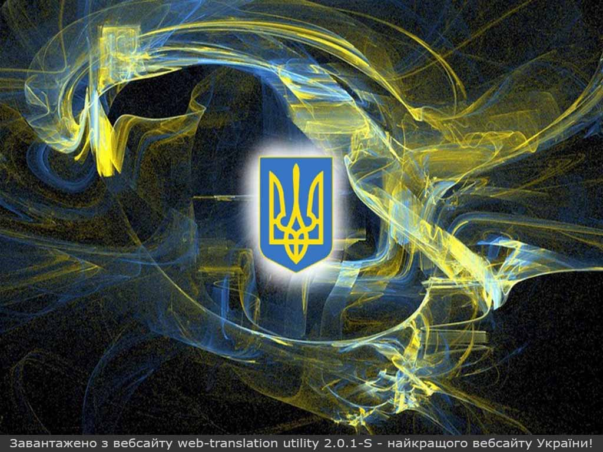 |
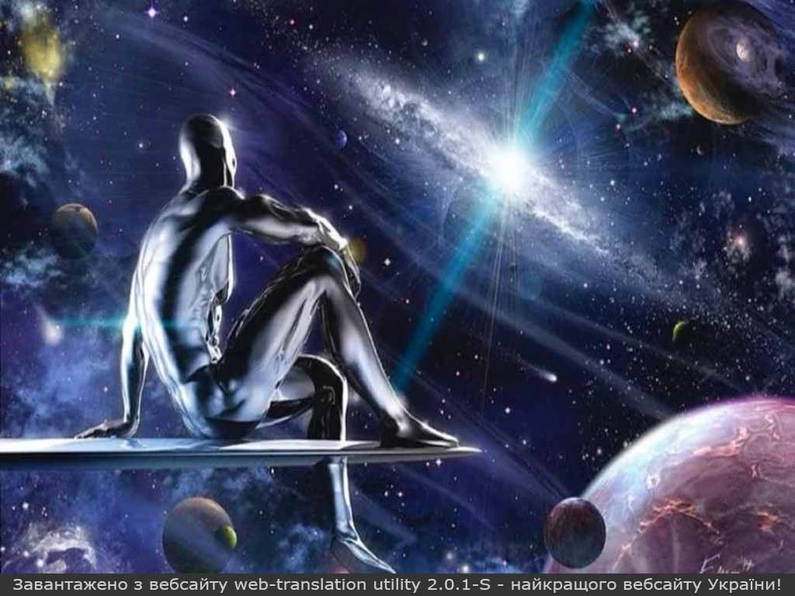 |
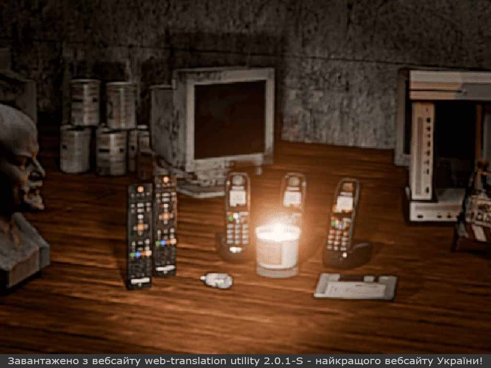 |
|
|
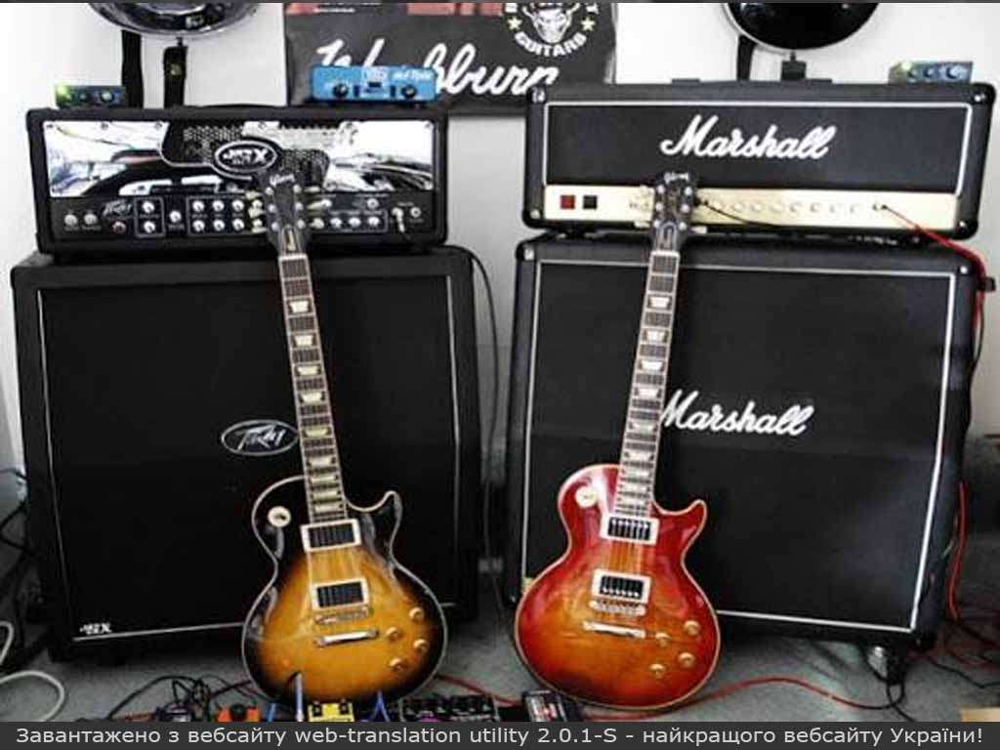 |
|||
Мапа заводів України з переробки цукрового буряка в цукор
10 фактів про Енштейна які вас шокують
Факт №1
коли вчений проживав у США його підозрювали в шпігунстві на користь Радянського Союзу за ейнштейном велося стеження а його телефонні розмови прослуховувалися
Факт №2
вчений любив курити люльку і навіть був Членом монреальського клубу курців люльок
Факт №3
Альберт айнштейн міг би бути президентом Ізраїлю
Факт №4
Альберт айнштейн не здав вступний екзамен в університет з таких предметів як географія мова
Факт №5
всупереч поширеній думці Альберт не був надто розумною людиною його айк'ю дорівнював 4
Факт №6
у 1935 році Альберт Ейнштейн випадково розплутав квантову заплутаність але під тиском наукового суспільства заплутав її назад
Факт №7
за все життя Ейнштейн жодного разу не сказав Дякую
Факт №8
Ейнштейн все життя їв тільки вилкою
Факт №9
Ейнштейн придумав струм потім пожалкував про це та вирішив вбити сам струм і в цій спробі трагічно загинув
Факт №10
Альберт айнштейн співпрацював з ніколою теслою щоб створити проривни та інноваційні на свій час технології
Помилка
Сторінка не знайденаСтривайте!
Там же було написано: «Лише для вибранців»! У вас є спеціальний, унікальний пароль, який підтверджує вашу винятковість?
Нонограма від ВАІ
©1997-2008 Науковий корпус ВАІ